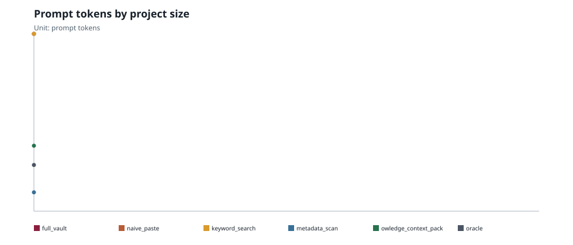
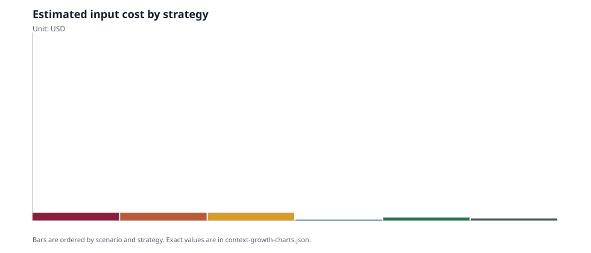
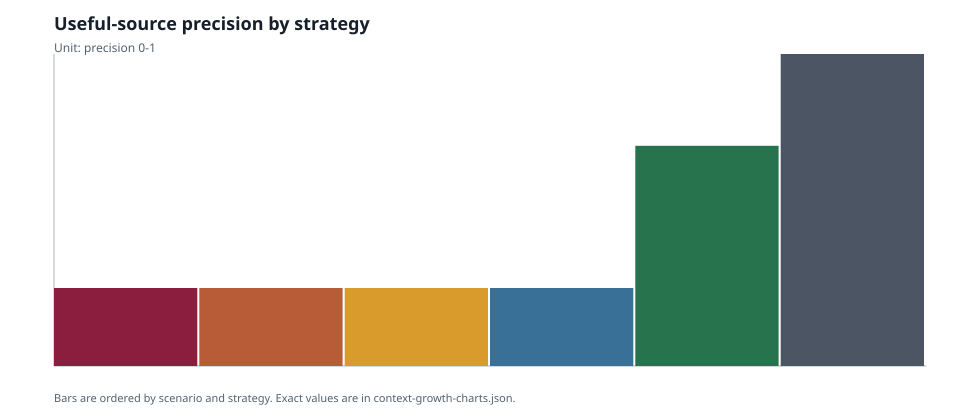
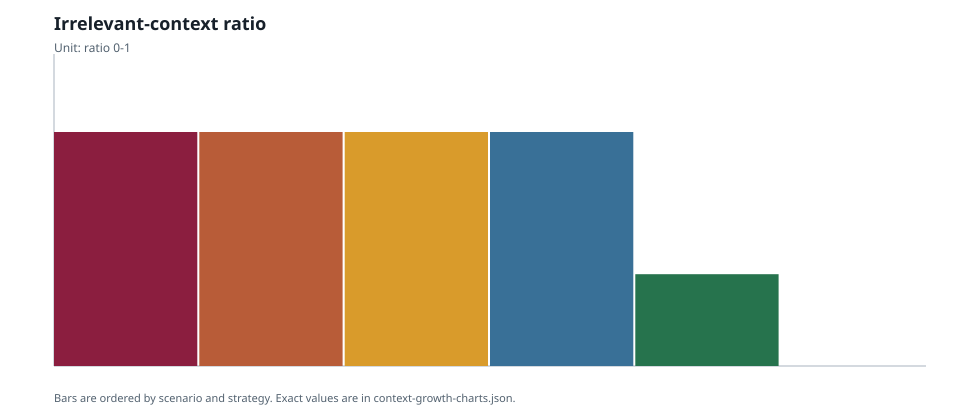
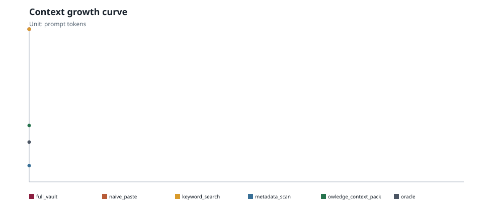
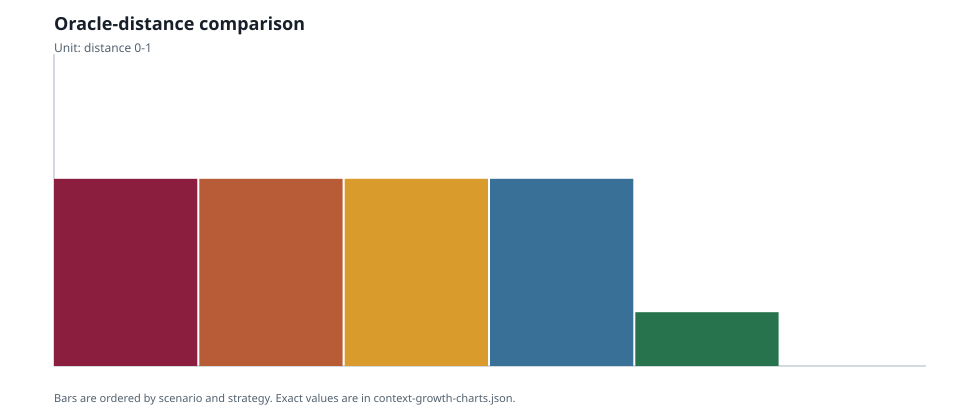

Enterprise Context Benchmark
Research-grade synthetic experiment. JSON is the source artifact; charts and tables are generated views.
Commit: d4a0c0d0f3c300ab4bf7d56c9b10e44be089f050 Tokenizer: deterministic-char4-estimate
Command: python tools/enterprise-context-benchmark/run-enterprise-context-benchmark.py --project-root . --profile fresh --seed 42
Hypotheses
- H1: Scoped Owledge context packs grow sublinearly compared with full-vault prompting.
- H2: Owledge reduces irrelevant-context ratio compared with naive paste and keyword search.
- H3: Metadata-first selection plus scoped context remains closer to the oracle than full-vault prompting under tighter token budgets.
Tokens By Project Size

Cost By Strategy

Precision Recall

Irrelevant Context Ratio

Context Growth Curve

Oracle Distance

Final Data Table
| Scenario | Files | Strategy | Tokens | Cost USD | Precision | Recall | Irrelevant Tokens | Oracle Distance | Privacy Leaks |
|---|---|---|---|---|---|---|---|---|---|
| fresh | 48 | full_vault | 16593 | 0.041482 | 0.25 | 1.0 | 0.5015 | 0.6 | 5 |
| fresh | 48 | naive_paste | 16593 | 0.041482 | 0.25 | 1.0 | 0.5015 | 0.6 | 5 |
| fresh | 48 | keyword_search | 16593 | 0.041482 | 0.25 | 1.0 | 0.5015 | 0.6 | 5 |
| fresh | 48 | metadata_scan | 1762 | 0.004405 | 0.25 | 1.0 | 0.5068 | 0.6 | 5 |
| fresh | 48 | owledge_context_pack | 6126 | 0.015315 | 0.7059 | 1.0 | 0.0 | 0.1724 | 0 |
| fresh | 48 | oracle | 4322 | 0.010805 | 1.0 | 1.0 | 0.0 | 0.0 | 0 |
Threats To Validity
The corpus is synthetic and controls ground truth. External validity requires runs against real project vaults. Cost numbers are scenario estimates, not universal savings claims.